Events that turn
service into action.
Creating moments that inspire service.
YRC MIT conducts health camps, blood donation drives, awareness programmes, annual camps, skill development sessions, and youth activities that bring students together to serve, learn, and make a meaningful impact.
"Why We Serve"
Our Vision
To build a compassionate, responsible, and socially conscious student community that contributes positively to society.
Our Mission
To encourage students to participate in humanitarian, health, social service, and awareness activities through teamwork, leadership, and volunteering.
Our Impact
Through our events and initiatives, YRC MIT creates meaningful opportunities for students to serve, learn, lead, and make a difference in the community.
Our Events
Explore the programmes and activities through which YRC MIT turns service, awareness and friendship into action.
Annual Camp
Seven days of service, learning and meaningful activities.
7 DAYSBlood Donation Drive
Promoting voluntary blood donation and community service.
BLOOD DONATIONEye Checkup Camp
Creating awareness about eye health and regular checkups.
HEALTH CAMPHealth Checkup Camp
Encouraging students to focus on health and preventive care.
HEALTH & WELLNESSBlood Donation Camp
An initiative that brings together willing student donors to support those in need of blood.
COMMUNITY SERVICEMultiple Sessions
Interactive sessions focused on awareness, skills and development.
SESSIONSYouthfest
A celebration of student participation, creativity and friendship.
YOUTHFEST01 · ANNUAL CAMP
Seven Days of
Service & Experience
The YRC MIT Annual Camp is a seven-day programme that brings student volunteers together through health, service, environmental awareness, social responsibility, learning, and friendship.
Inauguration & Orientation
The camp begins with the inauguration and an orientation programme introducing volunteers to the purpose, activities, and values of the camp.
Community Engagement& Field visit
Volunteers take part in field visits and community activities, gaining real-world experience while understanding the needs of the community and the importance of social responsibility.
Awareness programme& Rally
Students participate in awareness programmes and rallies to spread important social messages, encourage responsible citizenship, and create positive awareness within the community
Community survey& Outreach
Volunteers engage with the community through surveys and outreach activities, understanding local needs and promoting awareness, support, and social responsibility.
Braille Day & inclusion Awareness
A session focused on Braille awareness and inclusion, helping students understand the importance of accessibility and empathy.
Community Cleaning & Service Activity
Volunteers take part in cleaning and service activities, promoting cleanliness, teamwork, social responsibility, and a spirit of service within the community.
Talent Elevation & Valedict
The camp concludes with interactive activities with students, bringing together the core YRC values of Health, Service, and Friendship.
Seven days, captured in moments.
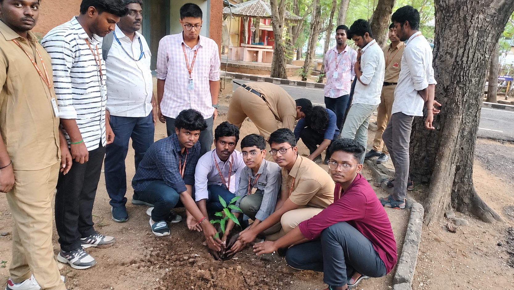
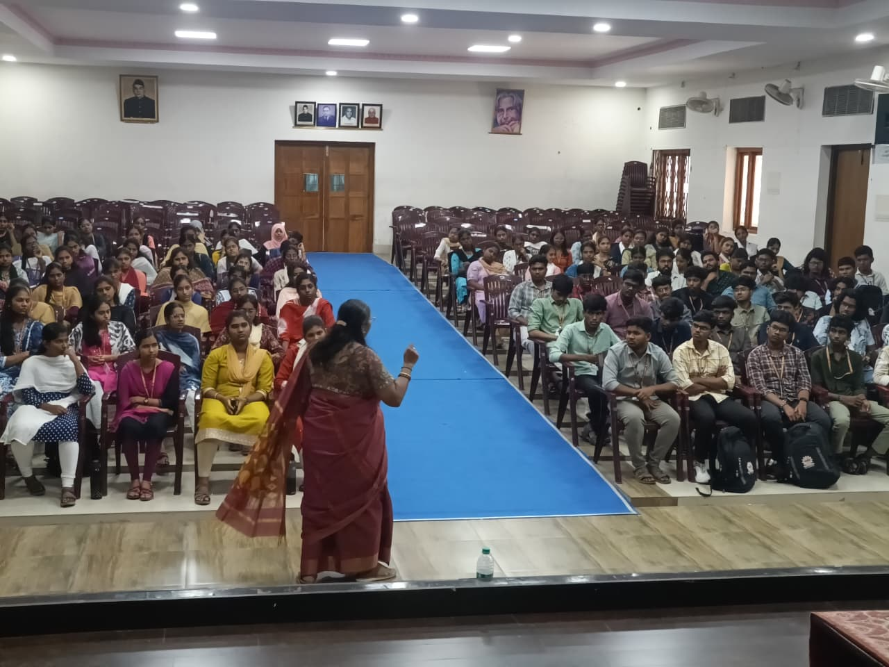
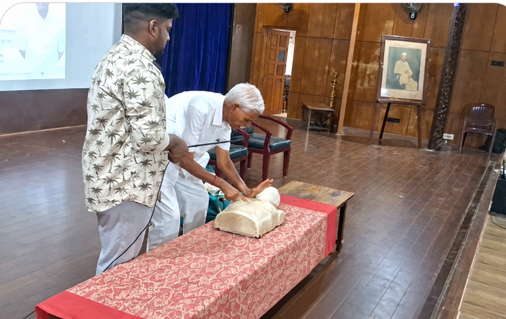


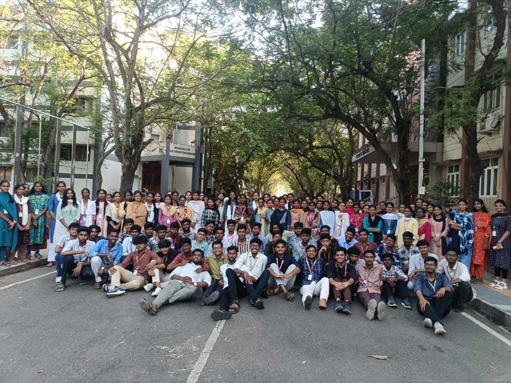
Building awareness.
Connecting support.
YRC MIT conducts blood donation drives to collect information from students and staff who are willing to support future blood donation initiatives. This helps the team maintain a list of potential donors and connect with them when there is a need.
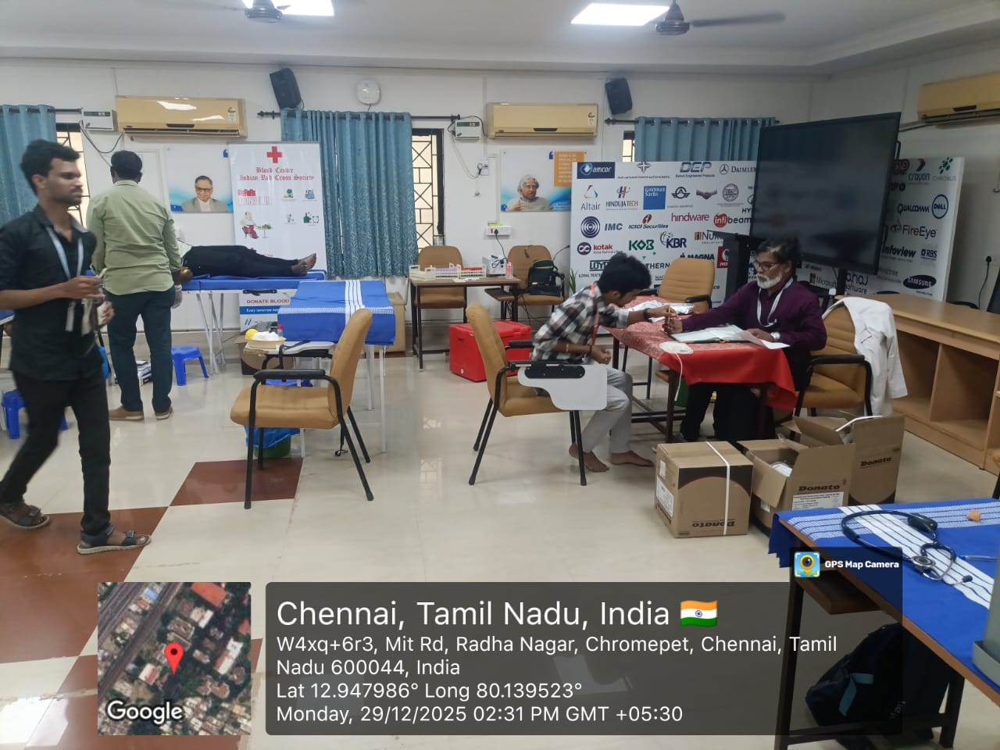
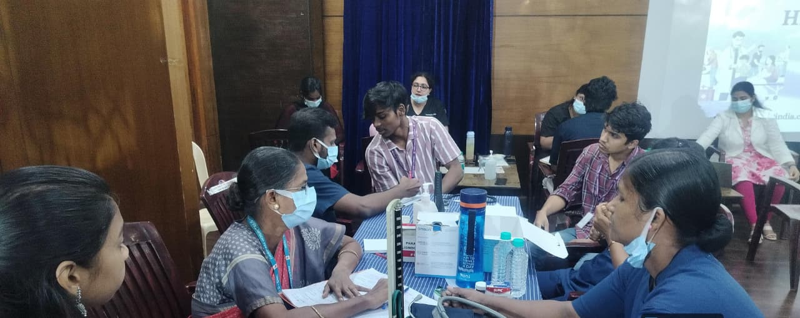
Eye Checkup
Camp
YRC MIT organises eye checkup activities to promote awareness about eye health and encourage students and the community to take proper care of their vision.
Health Checkup
Camp
YRC MIT conducts health checkup activities to encourage students and the campus community to give importance to regular health monitoring, preventive care, and healthy living.
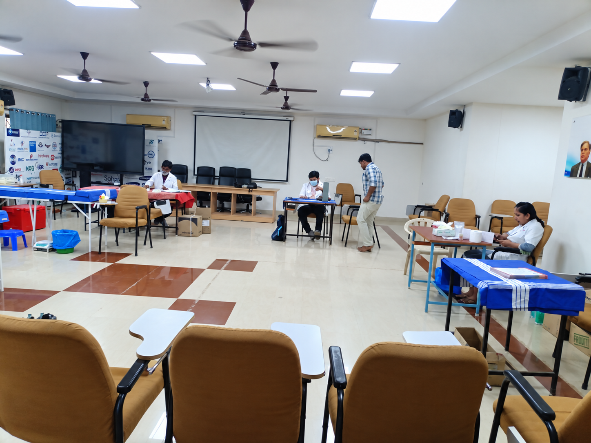
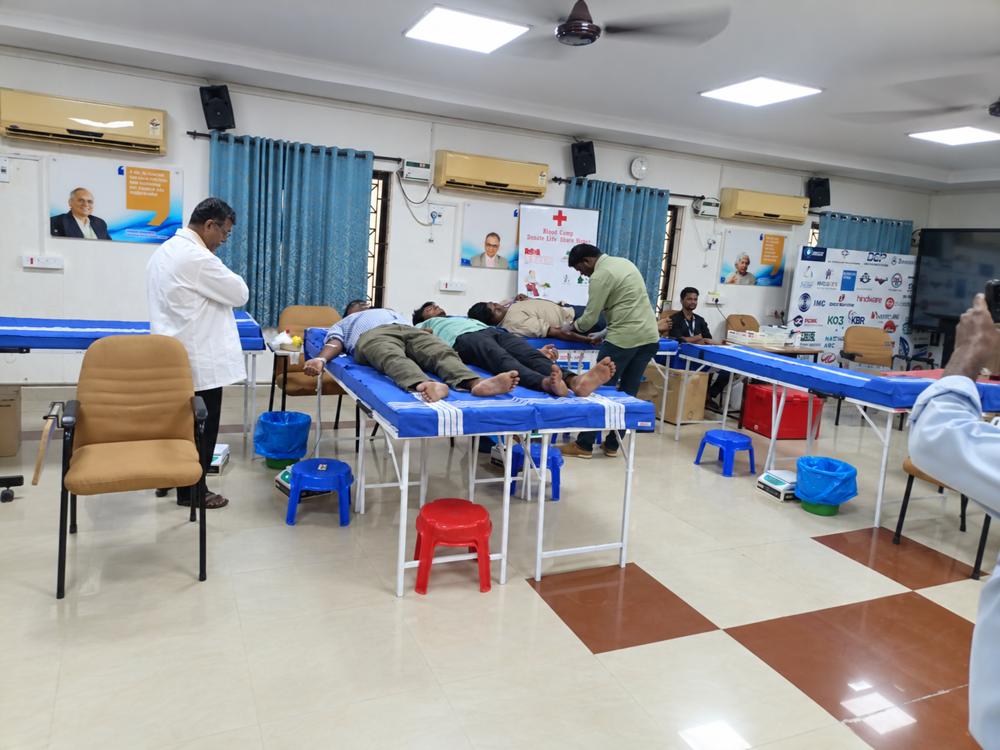
Blood Donation
Camp
A community service initiative that encourages students to participate in voluntary blood donation and creates awareness about the importance of supporting those in need.
Multiple Sessions
Learn. Participate. Grow.
YRC MIT conducts interactive and informative sessions that encourage students to develop awareness, confidence, communication, leadership, creativity, and practical skills.
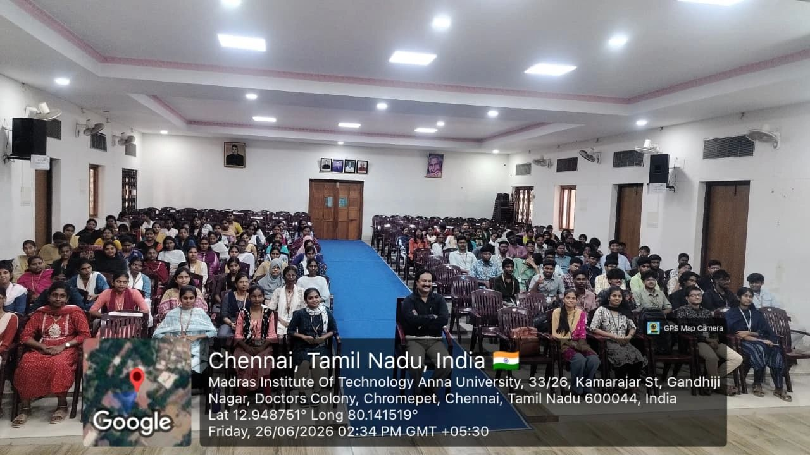
Youthfest
Youthfest is one of the important initiatives of Youth Red Cross, Madras Institute of Technology, bringing students together through participation, talent, friendship, and inclusive opportunities.
The programme provides a supportive platform for visually impaired students to participate, showcase their abilities, interact with others, and experience the spirit of healthy competition and community.
Through technical, non-technical, cultural, and interactive activities, Youthfest celebrates the talents and potential of every participant while creating an atmosphere of encouragement, equality, and friendship.
The event also recognizes and celebrates the achievements of participants by presenting prizes and certificates to the winners and runners-up. Beyond the competitions YouthFest creates an opportunity for both participants and YRC volunteers to share experiences, build friendships, and create lasting memories together. A day of talent, inclusion, friendship, and memories that stay beyond the event.
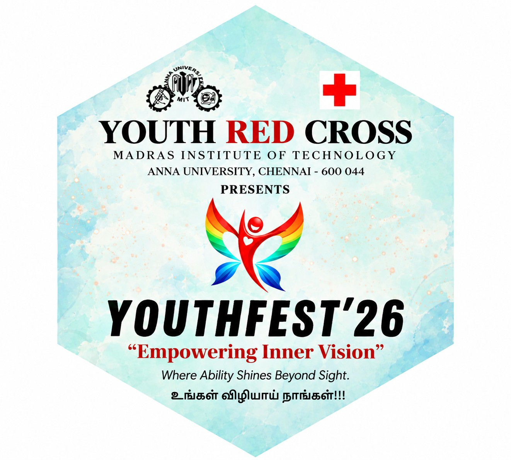
A tradition of
inclusion and opportunity.
For more than 20 years, Youthfest has been conducted by Youth Red Cross, Madras Institute of Technology as a meaningful platform for visually impaired students.
Over the years, the programme has continued to bring students together through participation, interaction, competition, and shared experiences. It reflects the continued commitment of YRC MIT towards creating an inclusive environment where every student gets an opportunity to showcase their abilities.
20+ YEARS OF CONTINUOUS YOUTHFEST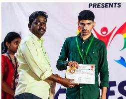
A platform where
ability comes first.
Youthfest was created with a meaningful purpose — to provide visually impaired students with a supportive platform where they can participate, interact, showcase their abilities, and experience the joy of being part of a larger student community.
The initiative focuses on opportunity rather than limitation. Students are encouraged to take part in different activities, demonstrate their talents, build confidence, and connect with fellow participants in an atmosphere of friendship and equality.
Different talents.
One inclusive platform.
Youthfest brings together technical and non-technical activities, giving visually impaired students opportunities to participate, compete, interact, and showcase their abilities.
Technical Events
Activities that encourage students to demonstrate their knowledge, skills, creativity, problem-solving ability, and technical interests.
SKILL · KNOWLEDGE · CREATIVITYNon-Technical Events
Interactive activities that encourage participation, confidence, communication, creativity, and enjoyment beyond the classroom.
FUN · INTERACTION · PARTICIPATIONInteractive Activities
Opportunities for participants to interact with one another, share experiences, build friendships, and enjoy the spirit of healthy participation.
FRIENDSHIP · TEAMWORK · EXPERIENCEMore than an event.
A meaningful experience.
Youthfest creates opportunities for participation, interaction, confidence, and friendship while providing a supportive platform for visually impaired students.
Confidence
Participation gives students an opportunity to express themselves, demonstrate their abilities, and build confidence.
Inclusion
Youthfest promotes an environment where visually impaired students can participate equally and feel welcomed.
Friendship
Interaction between participants creates connections, shared experiences, and a stronger sense of community.
Opportunity
The programme provides a stage for students to showcase their talents, skills, creativity, and potential.
Moments of
participation & friendship.
A glimpse of the people, participation, activities, and shared experiences that make Youthfest meaningful.

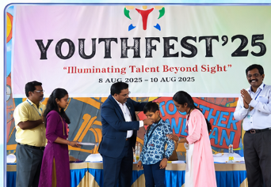
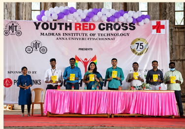
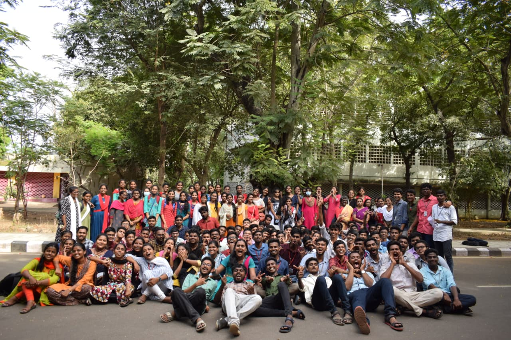
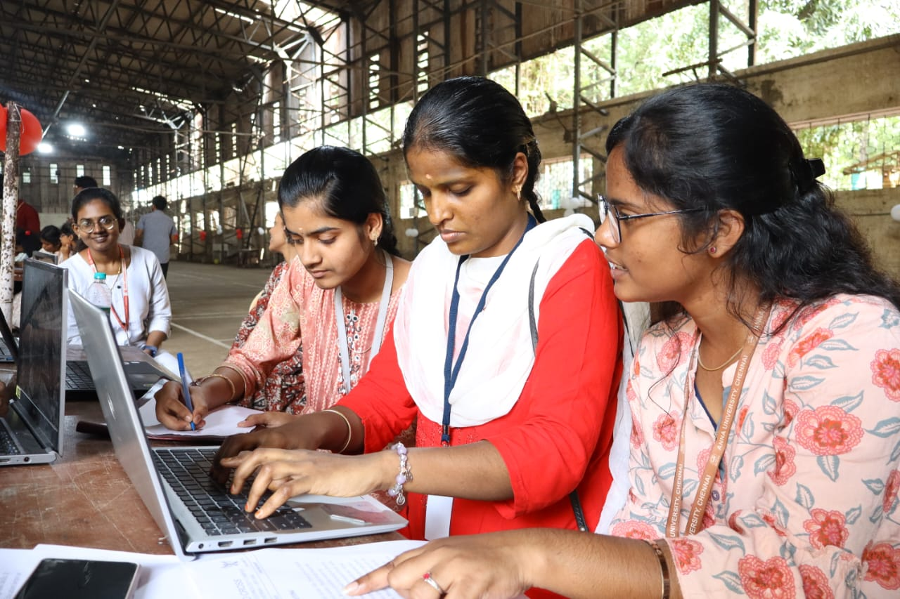

“Every opportunity to participate is an opportunity to discover what we are capable of.”
Youthfest — celebrating ability, participation, inclusion, and friendship for more than 20 years.
HEALTH · SERVICE · FRIENDSHIP